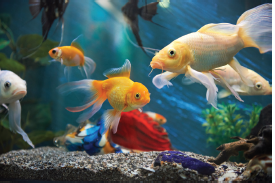

1. Dash is the percentage of nitrogen in air.
a. 78%
b. 21%
c. 0.03%
d. 1%
2. Gas exchange takes place in plants using dash.
a. Stomata
b. Chlorophyll
c. Leaves
d. Flowers
3. The constituent of air that supports combustion is dash.
a. Nitrogen
b. carbon-di-oxide
c. Oxygen
d. water vapour
4. Nitrogen is used in the food packaging industry because it dash
a. provides colour to the food
b. provides oxygen to the food
c. adds proteins and minerals to the
food
d. keeps the food fresh
5. dash and dash are the two gases, which when taken together, make up about 99 percentage of air.
one. Nitrogen
two. carbon-di-oxide
three. Noble gases
four. Oxygen
a. one and two
b. one and three
c. two and four
d. one and four
1. Dash is the active component of air.
2. The gas given out during photosynthesis is dash.
3. Dash gas is given to the patients having breathing problems.
4. Dash can be seen moving in a beam of sunlight in a dark room.
5. Dash gas turns lime water milky.
1. Inhaled air contains a large amount of carbon-dioxide.
2. Planting trees help in decreasing global warming.
3. The composition of air is always exactly the same.
4. Whales come up to the water surface to breathe in oxygen.
5. The balance of oxygen in atmosphere is maintained through photosynthesis in animals and respiration in plants.
1. Moving Air - Photosynthesis
2. Layer in which we live - Troposphere
3. Stratosphere - Wind
4. Oxygen - Ozone layer
5. carbon-di-oxide – Combustion
1. Plants manufacture food by a process called photosynthesis.
2. Plants require energy for their growth.
3. Plants take in oxygen and release carbon-di-oxide just as animals.
4. Plants take carbon-dioxide from the atmosphere, use chlorophyll in the presence of sunlight and prepare food.
5. Such oxygen is available to animals and human beings for breathing.
6. During this process, oxygen is released by plants.
1. Photosynthesis is dash
Respiration is Oxygen
2. 78% of air is Does not support combustion
Dash is Supports combustion
1. What will happen if we remove plants from the aquarium?
2. What will happen if we remove the fish from the aquarium and keep it (with green plants) in a dark place?

1. What is atmosphere? Name the five layers of atmosphere.
2. How do the roots of land plants get oxygen for breathing?
3. What should be done if the clothes of a person catch fire accidentally? Why?
4. What will happen if you breathe through mouth?
1. Biscuits kept open on a plate during monsoon days lose its’ crispness. Why?
2. Why do traffic assistants wear a mask on duty?
1. How do plants and animals maintain the balance of oxygen and carbon-dioxide in air?
2. Why is atmosphere essential for life on earth?
1. Can you guess why fire extinguishers throw a stream of carbon-di-oxide while putting - off fire?